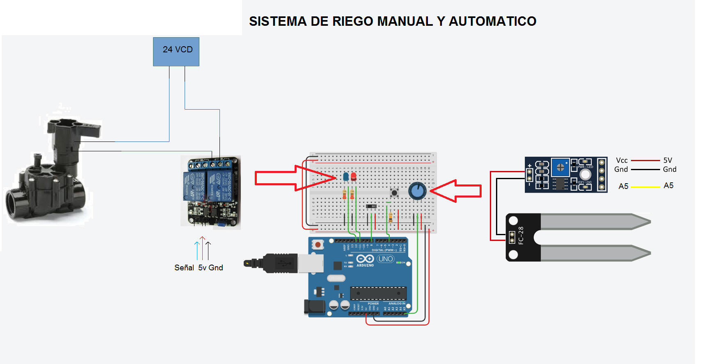
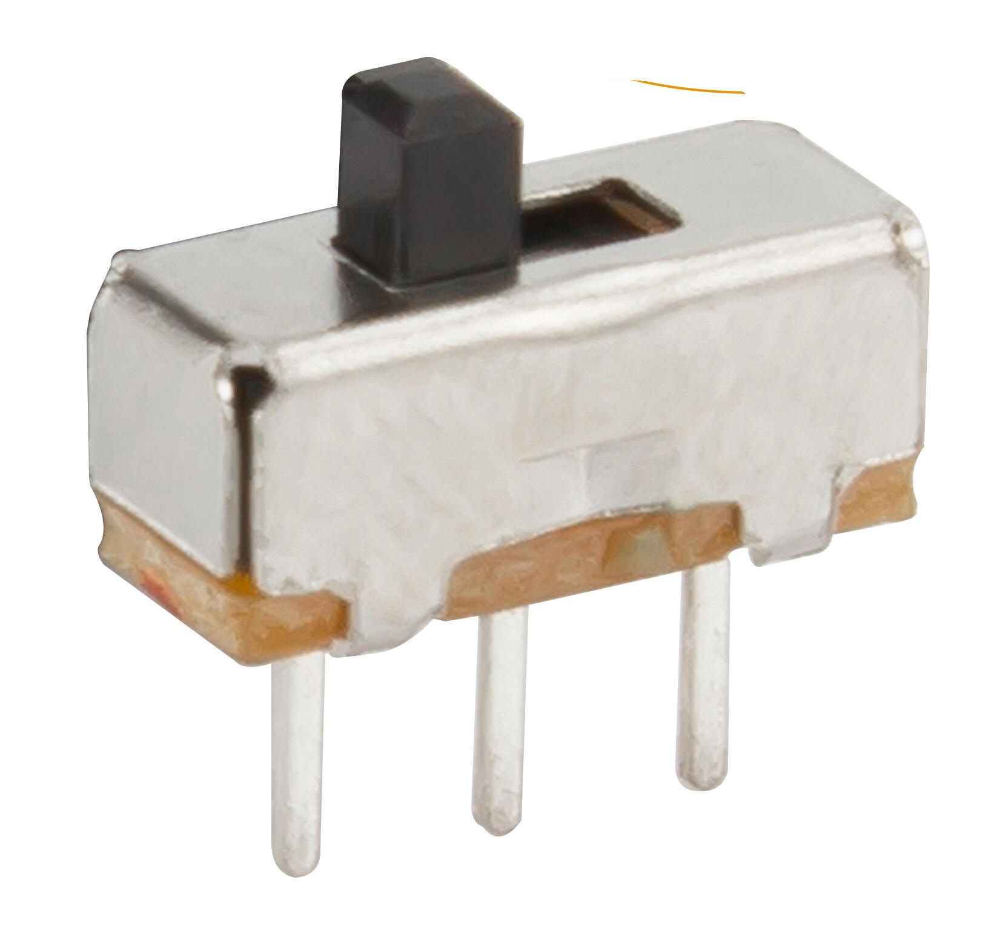
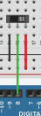
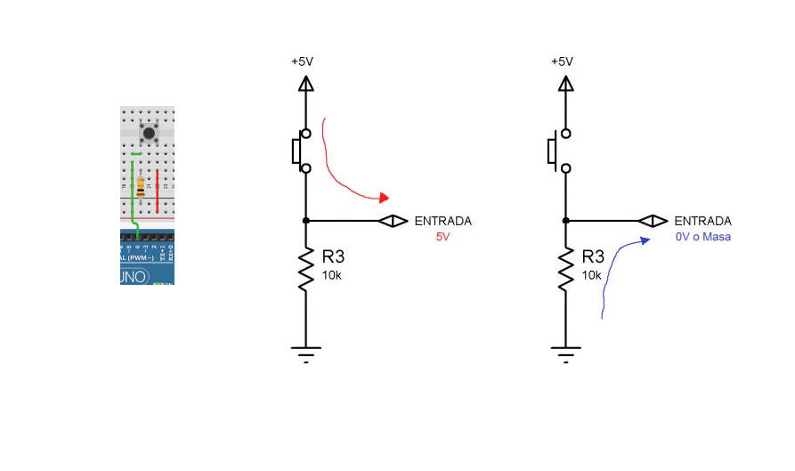
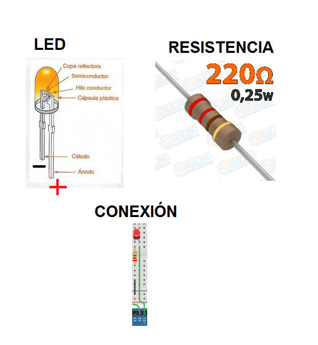
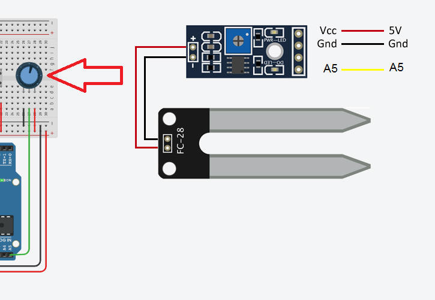

Fecha de actualización: 20 de Agosto 2020 18:00 Elementos actualizados se muestran resaltados en VERDE
PROCESO DIRECCIÓN DE FORMACIÓN PROFESIONAL INTEGRAL
FORMATO GUÍA DE APRENDIZAJE
IDENTIFICACIÓN DE LA GUÍA DE APRENDIZAJE
-
Denominación del Programa de Formación: TECNÓLOGO EN AUTOMATIZACIÓN INDUSTRIAL
-
Código del Programa de Formación: 224208
-
Nombre del Proyecto: DISEÑO Y CONSTRUCCIÓN DE MÓDULOS DE ENTRENAMIENTO PARA LA AUTOMATIZACIÓN DE PROCESOS INDUSTRIALES
-
Fase del Proyecto: EJECUCIÓN
-
Actividad de Proyecto: Mejoro el funcionamiento de máquinas y procesos buscando su eficiencia y productividad.
-
COMPETENCIA : 4775 - MEJORAR EL FUNCIONAMIENTO DE MÁQUINAS. Y PROCESOS ,BUSCANDO SU EFICIENCIA Y PRODUCTIVIDAD
-
Resultados de Aprendizaje Alcanzar: 17842 - REALIZAR PROTOTIPOS PARA AUTOMATISMOS.
-
Duración de la Guía: 40 horas
PRESENTACIÓN:
Esta guía se constituye en un documento orientador de tu proceso de formación, por lo tanto se recomienda:
- Leerla, comprenderla y aplicarla antes de realizar cualquier acción.
- El tiempo para la entrega de actividades será de acuerdo al plan de formación.
- Las actividades iniciales de la guía podrán ser grupales, pero la elaboración de los productos será individual.
- Revise la bibliografía sugerida para ampliar sus conocimientos
- Las evidencias de conocimiento se tomarán de acuerdo al desarrollo de la guía.
FORMULACIÓN DE LAS ACTIVIDADES DE APRENDIZAJE
En esta guía se orientara el proceso de diseño y construcción de un sistema manual y automático de riego usando Arduino
1. Enunciado
SISTEMA DE RIEGO MANUAL Y AUTOMÁTICO
Un cliente no solicita realizar un sistema de riego manual y automático a la medida utilizando Arduino, que permita realizar el riego de un cultivo de forma manual y automática, El sistema de contar con los siguientes requerimientos:
a. Contar un SWITCH de encendido y apagado del sistema que notifique con un LED y por el monitor serie el estado del sistema "encendido" o "apagado."
b. Tener un sensor de humedad de suelo que este constantemente midiendo en nivel de humedad de 0 a 100% donde 0% es que el suelo esta completamente seco y 100% es que esta completamente húmedo.
c. Tener un valor umbral de activación del riego predeterminado de 50% humedad
d. Poder modificar por el Monitor Serie este valor de umbral de humedad, con el fin de poder usar el sistema en diferentes cultivos
e. Contar con notificaciones por el Monitor Serie del valor de la humedad y del umbral de humedad en todo momento
f. El sistema debe contar con una salida para conectar un RELE para energizar un ELECTROVÁLVULA que dará paso al agua. Al mismo tiempo un LED que notifique que la ELECTROVÁLVULA se encuentra activa y también avisos en el monitor serie como:
"Electroválvula encendida automáticamente" y "Electroválvula apagada"
g. Debe contar pulsador que permita regar manualmente el cultivo, y al mismo tiempo notificar por el monitor serie que se esta regando manual.
A
continuación se muestra el diagrama del sistema de riego

2. Implementación del Sistema
Para resolver el problema planteado y llegar a una diseño de HARDWARE y SOFTWARE adecuado vamos a analizar cada aspecto requerido por el cliente
2.1 Impresión por el Monitor Serial, Entradas y Salidas Digitales
Para resolver los siguientes requerimientos del cliente necesitamos analizar un parámetros técnicos.
2.1.1 Configuracion del IDE e impresión de datos en el monitor serie
El cliente nos solicita poder supervisar el funcionamiento del sistema a través del monitor serial para esto haremos uso de la instrucción Serial.begin(9600); para inicializar el puerto serial a una tasa de transferencia de 9600 baudios y luego usarlo para imprimir texto de la siguiente manera Serial.println("Sistema Encendido"); o una variable por ejemplo Serial.println(humedad); en el siguiente video se muestra la configuracion y el uso del mionitor serie para nuestro sistema de riego.
2.1.1 Configuración y uso de entradas digitales
Otro requerimiento del cliente es que el sistema tenga un sistema de encendido y apagado por eso vamos hacer el uso de un SWITCH ON/OFF como el que se muestra en la figura.

Este tipo de SWITCH nos puede garantizar un nivel "bajo - LOW" cuando necesitemos que el sistema este apagado y un "alto - HIGH" de la siguiente manera:

Otro detalle del diseño es poder activar el riego de forma manual con un pulsador y con una resistencia PULL-DOWN como la que se muestra en la figura:

Para realizar el programa debemos utilizar la instrucción pinMode(8,INPUT) para configurar el pin 8 como entrada y y para leer el pin 8 la instrucción digitalRead(8); y asignarle el contenido a una variable por ejemplo: on_off = digitalRead(8). En algunos celulares hay que girar la pantalla para poder reproducir el video.
2.1.1 Configuración y uso de las salidas digitales
Otro aspecto del requerimiento es usar un LED como piloto para indicar al usuario que el sistema se encuentra encendido o apagado y para visualizar si la electroválvula se encuentra encendida o apagada, para esto usaremos un LED y una resistencia de 220 ohm conectados en serie debido a que las salidas tienen un voltaje de 5v como se muestra en la figura.

Para configurar un pin como salida digital debemos usar la instrucción pinMode(11,OUTPUT) y para escribir un nivel alto en el pin digitalWrite(11,HIGH) y un nivel bajo digitalWrite(11,LOW).
2.2 Lectura de entradas Analogas y escalamiento de la variable.
2.2.1 Lectura Analoga
Según lo solicitado por el cliente debemos poder conectar un sensor de humedad en una entrada análoga para poder leer este parámetro en tiempo real. Para este utilizaremos un sensor de humedad o en su defecto un potenciómetro (el cual podrá simular la variación de voltaje a la entrada de la entrada analoga) de 10Kohm como se muestra en la figura:

Para realizar la lectura análoga en Arduino hacemos uso de la instrucción analogRead(A5); y le asignamos el contenido a una variable por ejemplo humedad = analogRead(A5);.
En el siguiente video se muestra como se realiza la lectura de una entrada análoga y se genera un condicionamiento con la función IF/ELSE por ejemplo: if(humedad > 50); n algunos celulares hay que girar la pantalla para poder reproducir el video
2.2.1 Escalamiento de la variable
Según lo requerido por el cliente se necesita medir la humedad en un rango de 0 - 100% por lo que necesitamos hacer un escalamiento de la variable debido a que las lecturas obtenidas se están expresadas en el rango de 0 - 1023 unidades. Para esto haremos uso de la función map, en nuestro caso reasignamos la variable humedad de la siguiente manera humedad = map(humedad,0,1023,0,100); en el siguiente video se muestra el uso de la funcion map un el desarrollo de la solucion para el riego.
En algunos celulares hay que girar la pantalla para poder reproducir el video
2.3 Lectura Monitor Serial y Conversión de String a Int
Otro de los requerimientos de el cliente es poder contar con un mecanismo en el cual se pueda configurar el parámetro umbral de humedad en el Arduino de forma dinámica, es decir que el usuario pueda cambiar este valor por el Monitor Serial. Para esto haremos uso de la instrucción Serial.readString(); y por ejemplo se asignaría el valor a una variable String de la siguiente manera umbral_humedad = Serial.readString();.
La informacion onbtenida esta formatiada como String y nostros necesitamos poder realizar comparaciones matematicas con esta informacion, entonces se hace necesario convertir esta informacion a entero (int) con la funcion toInt como se muestra en el siguiente ejemplo: . En el siguiente video se muestra el uso del Monitor Serie para adquirir información y como se imprime dicha información.
En algunos celulares hay que girar la pantalla para poder reproducir el video
2.4 Programación del Sistema de Riego Manual y Automático
A continuacion en el siguiente video se muestra la programación del Sistema de Riego Manual y Automático En algunos celulares hay que girar la pantalla para poder reproducir el video
|
Evidencias de Aprendizaje |
Criterios de Evaluación |
Técnicas e Instrumentos de Evaluación |
|
Evidencias de Conocimiento : Evidencias de Desempeño Evidencias de Producto: |
Cumple con el procedimiento realizado |
Lista de Chequeo |
5. GLOSARIO DE TÉRMINOS
6. REFERENTES BIBLIOGRÁFICOS
Construya o cite documentos de apoyo para el desarrollo de la guía, según lo establecido en la guía de desarrollo curricular
7. CONTROL DEL DOCUMENTO
|
Autor |
Cargo |
Dependencia |
Fecha |
|
|
JHONN SUACHA |
INSTRUCTOR |
SENA |
|
|
8. CONTROL DE CAMBIOS (diligenciar únicamente si realiza ajustes a la guía)
|
|
Nombre |
Cargo |
Dependencia |
Fecha |
Razón del Cambio |
|
Autor (es) |
|
|
|
|
|

·
· ·
·
·